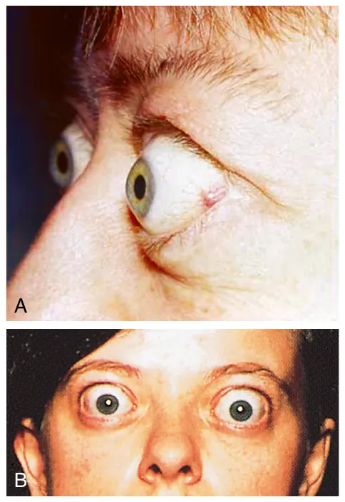

نسخه استخراجشده؛ ترجمه یا تأیید علمی انجام نشده است. وضعیت: captured
مرد ۴۲ سالهای با گواتر و چشمهای برجسته چند ماه است داروی تیروئیدش را نخورده و با آبسهی دندانی و تب آمده. وسط درناژ بیقرار میشود، عرق میریزد و نبضش ۱۵۰ و نامنظم است. به چه فکر میکنی؟

طوفان تیروئیدی (بحران تیروتوکسیک) تشدید ناگهانی و شدید پرکاری تیروئید است. نادر است، ولی جان بیمار را تهدید میکند. معمولاً در پرکاری درماننشده یا ناقص درمانشده رخ میدهد؛ گاهی حتی پیش از آنکه بیماری تشخیص داده شود.
گواتر، اگزوفتالمی، لرزش دست، تاکیکاردی، کاهش وزن، عدم تحمل گرما و بیقراری.
عفونت، جراحی، تروما، بارداری و هر استرس جسمی یا روحی شدید. در پرکاری کنترلنشده، اپینفرین هم ممکن است آریتمی خطرناک بدهد.
پیشگیری: در پرکاری کنترلنشده فقط درمان اورژانسی بکن، آن هم با هماهنگی پزشک بیمار. از اپینفرین پرهیز کن و عفونت را جدی و زود درمان کن.
کمای میکزدم وارونهی طوفان تیروئیدی است: کمکاری شدید تیروئید که مدتها تشخیص داده نشده یا بد کنترل شده است. آرامبخشها و مخدرها، عفونت، جراحی و استرس شدید آن را شعلهور میکنند. بیمار کمکاری کنترلنشده به آرامبخش و مخدر واکنش شدیدتری نشان میدهد.
اشتباه رایج: خنک کردن هر بیمار تیروئیدیِ بدحال. در کمای میکزدم بیمار را بپوشان تا گرم بماند، ۱۱۵ را خبر کن، علائم حیاتی را بسنج و اگر لازم شد CPR. درمان قطعی، لووتیروکسین وریدی و کورتیکواستروئید، در بیمارستان است.